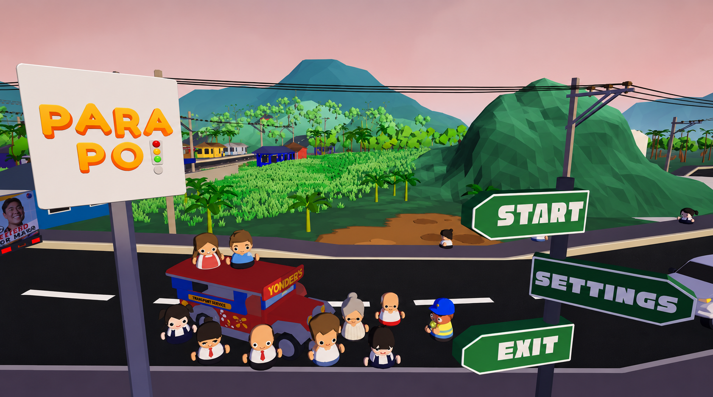
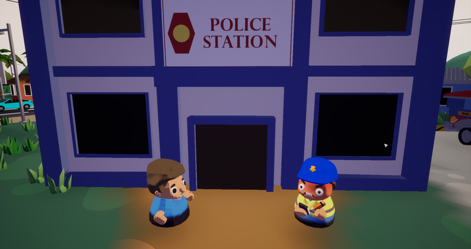

Para Po!
A 3D simulation game created in Unreal Engine about navigating the work and daily pressures of jeepney driving in the Philippines.
Gameplay
The player takes on the role of Totoy, a young boy who has to inherit their family's business of jeepney driving. However, the streets are no playground. Totoy must navigate the chaotic reality of jeepney driving – mastering pick-ups, drop-offs, and the often-unpredictable Philippine traffic, alongside dealing with the ongoing jeepney phaseout.



Project Roles
- Lead Programmer
- Gameplay Programmer
- Systems Programmer
- UI Programmer
- Level Designer
Awards & Recognition
- Best Capstone Thesis AwardDe La Salle College of Saint Benilde
- Game On 2024 Innovation AwardNominee
- Game On 2024 Game of the YearNominee
- Game On 2024 Best Desktop/Console GameNominee
- Young Creatives Challenge 2Game Development Category · 7th place